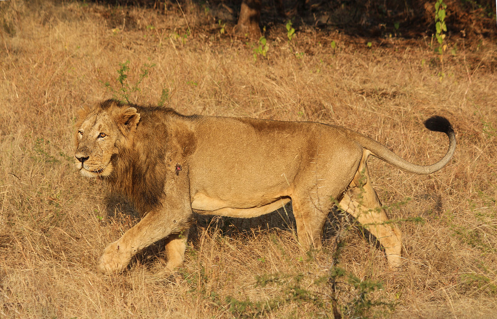

Distribution and Habitat
The lion prefers grassy plains and savannahs, open woodlands with bushes and scrub bordering rivers. It is absent in rainforestand rarely enters closed forest. On Mount Elgon, it has been recorded up to an elevation of 3,600 m (11,800 ft) and close to the snow line on Mount Kenya.
Africa

In Africa, lions can be found in savanna grasslands with scattered Acacia trees, which serve as shade.[179] The habitat of lions originally spanned most of Africa except the central rainforest-zone and the Sahara desert.[180] They became extinct in the north before the end of the twentieth century.[181]
Asia
The lion's range used to span much of southern Eurasia, ranging from Greece to India. Herodotus reported that lions had been common in Greece in 480 BC; they attacked the baggage camels of the Persian king Xerxes on his march through the country. Aristotle considered them rare by 300 BC. By 100 CE, they were extirpated. A population of Asiatic lions survived until the tenth century in the Caucasus, their last European outpost. The species was eradicated from Palestine by the Middle Ages and from most of the rest of Asia after the arrival of readily available firearms in the eighteenth century. Between the late nineteenth and late twentieth centuries, they became extinct in Southwest Asia. By the late nineteenth century, the lion had disappeared from Turkey and most of northern India, while the last sighting of a live Iranian lion was in 1942, about 65 km (40 mi) northwest of Dezful, although the corpse of a lioness was found on the banks of the Karun river, Khūzestān Province in 1944. There are no subsequent reliable reports from Iran.
The Asiatic lion now survives only in and around the Gir Forest of northwestern India. Approximately 500 lions live in the area of the 1,412 km2 (545 sq mi) sanctuary in the state of Gujarat, which covers most of the forest. Their numbers have increased from 180 to 523 animals mainly because the natural prey species have recovered. The Indian lion's habitat is a mixture of dry savanna forest and very dry deciduous scrub forest.
Source : https://en.wikipedia.org/wiki/Lion